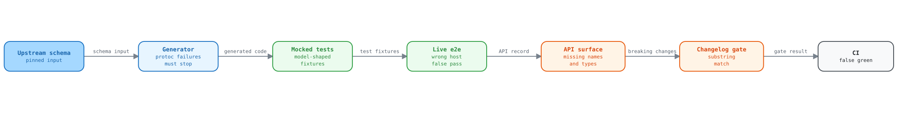

Pre-PR audit of the V6 SDK branch
This report lists the defects that an audit found on branch
FA-2-Update-the-python-SDK-from-V5-to-V6 at commit 6e76b43, on
2026-10-10. Nine parallel audits covered the hand-written runtime, the gRPC
bridge, the generator, the generated code, the tests, packaging, CI, the
release tooling, and the docs. The main session reproduced the most severe
findings a second time.
The audit made no call to the real Kentik API. It ran no e2e test (an
end-to-end test against the real API) and did not read .env. It changed no
tracked file and pushed nothing. The reproduction scripts are in
evidence/. Some of them expect the scratch layout that they ran
in, so read them as records, not as ready tests.
Summary
The baseline is green:
uv run poe testgave 2948 passed, 145 skipped, and 468 e2e deselected.- Ruff lint, Ruff format,
ty,uv run poe check-specs, and the Sphinx-Wbuild passed. - A fresh regeneration at api-schema-public
9de9a68is byte-identical to the committed tree. That commit is the upstream HEAD on 2026-10-10. - The regeneration gives the same bytes across hash seeds, working directories, and a fresh Python 3.12 toolchain.
The green suite hides real defects. The mocked tests build their sample responses from the generated models, so they cannot see a model that disagrees with the schema. The REST e2e layer never reaches Kentik, and both e2e layers pass on any SDK error. Two model bugs and a lost gRPC service passed all 2948 tests. The diagram shows the gap in each gate.

Open the interactive audit explorer to select each gate and see its recorded failure and evidence.
| Section | Count | What to do |
|---|---|---|
| Blockers | 13 | Fix before the PR, or name each deferred item in the PR description. |
| Generation pipeline | 7, plus 13 latent hazards | Fix before the next schema sync. |
| Test gaps | 10 | Add the tests that can catch the blockers. |
| Runtime defects | 16 | Fix in the hand-written runtime. |
| Release and packaging | 12 | Fix before the first 2.0.0 release. |
| Documentation | 12 | Fix in the generator templates or the hand-written pages. |
Remediation batch tracker
| Batch | Phase | Target findings | Verification gates | Status | Notes |
|---|---|---|---|---|---|
| A1 | Phase 1 setup | Tracking scaffolding for all finding sections | Validation ledger header + quickstart workflow review | Complete | Establishes execution header, batch tracker, and deferred-risk template. |
| A2 | Phase 2 foundational | Finding-state governance for B1-B13, P1-P7, L1-L13, T1-T10, R1-R16, K1-K12, D1-D12 | Spot-check runner state hooks + policy checks | Complete | Enables per-finding state recording before story implementation work starts. |
| B1 | US1 blockers | B1-B13 | Runtime regressions + C1-C5 replay + evidence scripts | Complete | Fixed B1, B5, B6, B7, B10, B13. Deferred B2, B3, B4, B8, B9, B11, B12. |
| C1 | US2 generator and release | P1, P4 to P7, L1-L13 | Generator tests, uv run poe generate --local |
Complete | P1, P5, P7 fixed. P4, P6 partial. L1-L13 deferred. |
| D1 | US3 runtime | R1-R16 | Runtime suites | Complete | R1, R3, R8 fixed. R2, R12 partial. The rest deferred. |
| E1 | US4 test gaps | T1-T10 | Smoke and generated suites | Complete | T5, T6, T8, T10 fixed. T2 partial. T1, T3, T4, T7, T9 deferred. |
| F1 | US5 packaging and docs | K1-K12, D1-D12 | Packaging tests, uv build, Sphinx |
Complete | K4-K7, K9-K12, D7-D10 fixed. The rest deferred. |
Each finding names the place for the fix: the runtime, the generator, a template, the tests, CI, the docs, or upstream. No fix belongs in a generated file. "Reproduced" means that a script showed the failure. "Traced" means that the audit followed the code path but did not run it.
Blockers
B1. A new enum value from the server breaks the whole call
Where: the 97 generated (str, Enum) classes, and
httpx.jinja2:33, which
builds the response model with no guard.
The generated enums reject any value that they do not list. When Kentik adds a
value, every installed SDK version fails on each response that contains it.
The error is a pydantic.ValidationError. It is not a KentikError, but
error_handling.md:48 says
that except KentikError catches everything.
This happens in practice. Upstream commit 8eb47aa (2026-08-18) added
LANDING_TYPE_AI_ADVISOR. One user with that landing page makes
client.user.list_users() fail for the whole account. 99 of 234 operations
return a model that reaches one of 79 enums. The gRPC audit found that 96 of
the 228 gRPC-covered operations fail on both transports.
Evidence: Reproduced. A mocked list_users response with an unknown
defaultLandingPageType raised a ValidationError of type enum.
Fix in: a template. Override the enum template of the generator and add a
_missing_ hook that returns a pseudo-member for unknown names and numbers.
The generated-code audit tested this approach with pydantic. Also wrap a
response parse failure in a KentikError subclass that keeps the raw body and
rate_limit.
B2. Alert.acknowledgement has the wrong type
Where: generate_sdk.py:193-197, in
clean_schema_names.
The alert swagger defines an object AlertAcknowledgement (state,
ackedByUser, autoAckId, ackedAt) and an enum
v202505AlertAcknowledgement. When the generator strips the version prefix,
the enum overwrites the object with no warning.
Alert.py:42 then
types the field as the enum.
Any alert that carries an acknowledgement makes alert_list, alert_get,
ack, and un_ack raise ValidationError, on REST and on gRPC. For ack, the
server performs the action and then the SDK raises, which invites a retry. This
is the only such collision in the 89 swagger files.
Evidence: Reproduced by four audits. The main session read both schemas in
alert.swagger.json.
Fix in: the generator. When the short name already exists, keep the prefix or fail the run. Add the same guard for model files that two swagger files write. 43 model names repeat across files today, and all of them are identical.
B3. ExternalContext requires both members of a oneof
Where:
ExternalContext.py:17-19.
Upstream alert.proto:484-498 marks servicenow and jira_cloud as REQUIRED.
Both sit inside oneof context, a proto group where at most one field is set.
Any alert linked to an external ticket fails with jiraCloud Field required.
set_external_context cannot work. The model needs both members, and the
server rejects a body with both.
Evidence: Reproduced on both transports. This is the only oneof with more than one REQUIRED member.
Fix in: the generator, and upstream. Drop oneof members from required, with
the oneof index from the compiled descriptors. Report the annotation upstream.
B4. gRPC lost MitigationsService to a file-name collision
Where: generate_sdk.py:496-497
copies every compiled proto into one flat pb/ directory by file name.
alerting/public/v202505/mitigation.proto declares MitigationsService with 6
RPCs. alerting/types/v202506/mitigation.proto compiles to the same file name
and overwrites it. The generator prints no warning. These 6 methods raise
NotImplementedError on gRPC:
mitigations_list,mitigations_create, andmitigations_getactavailable_actionsandavailable_actions_for_mitigation
The docs blame upstream.
rest-vs-grpc.md:129,
CHANGELOG.md:95, and the alerting service page say
that no proto declares the service.
test_wrapper_generation.py:258
asserts the bug as the expected result.
Evidence: Reproduced. The committed mitigation_pb2.py names the
types/v202506 source, and no alerting pb file contains MitigationsService.
Fix in: the generator. Keep the proto package tree under pb/. Fail on a
duplicate file name. Relink imports by package, not by file stem. The fix gives
gRPC 234 of 234 operations. Then correct the test, the docs, and the CHANGELOG.
B5. A malformed credential leaks the API token into the error text
Where:
rest_runtime.py:91-94
copies the httpx error text into TransportError.
A token from a password manager CLI often ends in a newline. The HTTP library
rejects the header, and the message becomes
ListUsers transport failed: Illegal header value b'<token>\n'. The full token
then reaches logs, CI output, and error trackers. An email with a trailing
space leaks the same way. A non-ASCII value raises a bare UnicodeEncodeError.
Evidence: Reproduced against a local socket.
Fix in: the runtime. Strip the email and token once, in KentikAPI and
APIConfig. Reject control and non-ASCII characters with a
ConfigurationError that names the field, never the value. Do not copy
httpx.LocalProtocolError text into an exception.
B6. A gRPC call after close() crashes the interpreter
Where:
grpc_client.py:98-99
closes the channel. The deadline interceptor at
grpc_client.py:40-53
still calls into it.
A wrapper call after close(), or a call that races shutdown, kills the
process with a segmentation fault (exit 139). There is no traceback and nothing
to catch. The root bug is in grpcio 1.84.0, but only the SDK can stop it. REST
raises ConfigurationError in the same case.
Evidence: Reproduced 3 of 3 times, with a localhost target. Another call path
raises the builtin ValueError instead.
Fix in: the runtime. Keep a closed flag on GrpcTransport. Make the
interceptor raise ConfigurationError before it calls the channel.
B7. gRPC ignores the credentials and host of an override
Where:
grpc_runtime.py:125-136
takes only grpc_deadline from api_config_override. The channel binds the
credentials and target at
grpc_client.py:83-91.
A script that serves several accounts passes an override with tenant B credentials to a tenant A client. REST acts as tenant B. gRPC acts as tenant A, for writes too. An override with no credentials raises on REST but runs on gRPC. The CHANGELOG mentions the limit. The quickstart says that an override carries its own credentials, with no gRPC exception.
Evidence: Reproduced with an in-process gRPC server, which saw the tenant A credentials.
Fix in: the runtime. When the override credentials, base_path, or verify
differ from the transport values, raise ConfigurationError. As an
alternative, build the auth metadata per call in the interceptor.
B8. httpx 1.0 will break import kentik_api
Where: pyproject.toml:30 declares httpx>=0.28.1
with no upper bound.
api_config.py:9 imports the
private httpx._utils.
httpx 1.0.dev4 to 1.0.dev6 are on PyPI, and they have no httpx._utils.
When 1.0 final ships, every fresh install resolves to it. The import then fails
with ModuleNotFoundError.
Evidence: Reproduced in a throwaway venv with httpx==1.0.dev6.
Fix in: packaging and the runtime. Cap httpx<1 now. Replace the private
import with urllib.request.getproxies() and proxy_bypass. The surface alert
treats a changed requirement as breaking, so add a CHANGELOG line.
B9. gRPC responses over 4 MiB fail and look like a quota error
Where:
grpc_client.py:88-91
passes no channel options, so grpcio keeps its 4 MiB receive limit. Version
1.0.7 set 40 MB.
grpc_runtime.py:28 maps
RESOURCE_EXHAUSTED to 429.
A large account calls list_devices(), and the response exceeds 4 MiB. REST
returns the data. gRPC raises HTTPException(429) with a rate_limit that is
not exhausted. The rate-limiting guide tells callers to back off on 429, so the
retries fail forever.
Evidence: Reproduced with a local server that returns 5 MB. Real Kentik responses over 4 MiB are likely, but nobody measured one.
Fix in: the runtime. Set grpc.max_receive_message_length on the channel, and
expose channel options. Classify the client-side size error apart from quota.
Add the change to
migrating-from-1x.md.
B10. Enum members in a path or query go out as ClassName.MEMBER
Where: rest_runtime.py:33
formats path values with format(). Query values at
rest_runtime.py:77-79
reach httpx unchanged, and httpx calls str().
client.device.list_devices(view=DeviceView.DEVICE_VIEW_FULL) sends
view=DeviceView.DEVICE_VIEW_FULL. A policy_get call with
PolicyType.POLICY_TYPE_AGENT builds
/v202505/policies/PolicyType.POLICY_TYPE_AGENT/1. The parameters are typed
str, and the generated enums subclass str, so type checkers accept the
call. gRPC sends the correct value. At least 12 parameters across 9 operations
take enum values.
Evidence: Reproduced on Python 3.12 and 3.14.
Fix in: the runtime. Unwrap Enum to .value in path_segment and in query
cleaning, list items included.
B11. Public names are not stable, and 2.0.0 will freeze them
Three naming rules make user code break on a routine schema update:
wrapper_generation.py:312-325gives a bare method name to the module that sorts first. Todayclient.alerting.list,get,create,delete, andreplaceact on auto-ack rules, and the alert list isalert_list. A new upstream module that sorts earlier points these five methods at other endpoints. A regeneration experiment showed this, and the surface record reported no breaking change.- 12 method names carry a service prefix from upstream operationIds, joined
with
__, for exampleroute_service__announce. They are in kagent (8), ktbgp (3), and nms (1). - 50 model class names keep a version string, for example
labelv202210Label,devicev202504beta2Label, andtypesv202506PaginationConfig. A version bump renames them.README.md:13says that the pipeline removes these prefixes.
Evidence: Reproduced.
Fix in: the generator, before the first 2.0.0 release. Prefix every operation
name that is not unique in its service. Strip service prefixes from
operationIds. Strip version tokens in all positions, and fail on a resulting
collision. Record each client.<service>.<method> in
api_surface.json.
B12. The per-operation error class is never raised
Where:
error_package.py:266 makes
each leaf class, for example ListDevicesUnexpectedError, a subclass of the
service error. The operation class from
error_package.py:276 is not
its parent.
except ListDevicesError: catches nothing. REST raises
ListDevicesUnexpectedError, and gRPC raises the base HTTPException. The
error guide documents the gRPC difference. CLAUDE.md says that both transports
raise the same type.
Evidence: Reproduced with a mocked 404.
Fix in: the generator and the runtime. Make each leaf class a subclass of its
operation class. Pass the operation error class to call_grpc, so that gRPC
raises the same type.
B13. The e2e layer proves nothing
Four defects stack up:
- The REST e2e never reaches Kentik.
tests/_discovery.py:199-206givesapi_config_overridea sampleAPIConfigforhttps://api.example.com.test_endpoints_e2e.py:61fills every parameter. All 100 REST calls go to that host and raiseTransportError. - The pass rule accepts any
KentikError, intest_endpoints_e2e.py:65-77andtest_endpoints_e2e_grpc.py:63-81. A revoked token or a network outage stays green. No test asserts the response type. - Without credentials, the fixtures error instead of skipping.
conftest.py:23andconftest.py:40catchValueError, butKentikAPIraisesConfigurationError. - Any
-mexpression replaces the default marker filter atpyproject.toml:92. The commandpytest tests/ -m "not slow"collects all 468 live tests, which use the credentials in.env. The live tests issue only GET calls.
Evidence: Reproduced with mocked replays of the e2e calls and with
--collect-only.
Fix in: the tests.
- Pass no override in e2e.
- Accept only
HTTPException, plusNotImplementedErrorfor a listed unrouted operation. - Assert the return type.
- Get real IDs with a list call before each get call.
- Catch
ConfigurationErrorin the fixtures. - Gate the live layer behind an explicit flag in
tests/e2e/conftest.py, and add--strict-markers.
Generation pipeline
These defects decide whether a schema sync stays cheap.
P1. protoc failures do not fail generation
Where:
generate_sdk.py:504-515 and
generate_sdk.py:346-347 only print
a protoc error.
In a scratch copy, one syntax error in vault.proto gave exit 0 and
"Generation Complete". The vault and credential services lost all their pb
files, and their wrappers became REST-only. The surface record reported no
change, and check-changelog passed. B4 passed every gate the same way.
Fix in: the generator. Exit non-zero on any protoc failure. Record the gRPC
route of each operation in api_surface.json, and treat a lost route as
breaking.
P2. The generator toolchain is not pinned
Where: generate_sdk.py:52-66 runs
uvx openapi-python-generator with no version. The tool is not in
pyproject.toml or uv.lock.
CI resolves the newest generator on every run, but the fixups match the exact
output of version 2.1.2. A new generator release can fail the determinism job
on unrelated PRs, and a local run cannot reproduce that failure. Also, a run
from outside the project directory resolves grpcio-tools fresh through
uv run --with grpcio-tools, and grpcio-tools 1.85.0rc1 shipped on
2026-10-09.
Fix in: the generator. Add openapi-python-generator==2.1.2 to the dev group
and call it with uv run. Drop --with grpcio-tools. Pass --project to
every inner uv call. Add a pin test.
P3. CI follows a moving schema, and nothing syncs the repo
Where: the generated-output-matches-schema-head job at
tests.yml:101-132.
The job regenerates from upstream HEAD on every PR and fails on any
difference. Upstream changed generator inputs 17 times in the last 90 days, so
every open PR and main turn red until someone regenerates. No file records
the schema commit, so nobody can rebuild an old tree without the commit
messages. There is no scheduled sync job, and there is no Dependabot or
Renovate configuration. The actions use old major versions without SHA pins.
Fix in: CI.
- Commit the schema commit hash, for example in
api_surface.json. - Make the PR job regenerate at that pinned commit.
- Add a scheduled job that moves the pin to upstream HEAD, regenerates, and opens a PR with the surface alert.
- Add
dependabot.ymlforgithub-actionsanduv. - Pin the actions by SHA.
P4. Generation is not atomic
Where: generate_sdk.py:376-393
wipes gen/ before most of the work. The parity check runs later, at
generate_sdk.py:528.
If upstream renames its files so that no file matches, the pre-wipe test
passes on an empty list. The run wipes gen/ and then fails. client_mixin.py
still imports the deleted wrappers, so import kentik_api fails until a
git checkout. Any abort after the wipe has the same result.
Fix in: the generator. Before the wipe, compare the schema directories with the selected services, and require at least one file. Build into a staging directory and swap it in only on success.
P5. Version selection compares strings
Where: parity.py:54.
v202504beta2 wins over GA v202504, beta9 wins over beta10, and
v20260515beta1 wins over v202605. No current service triggers this.
Fix in: the generator. Compare a parsed tuple of date, stage rank, and stage number. Fail on a version name that does not parse.
P6. The surface record and the changelog gate miss breaking changes
Where:
api_surface.py:133-152
and release_notes.py.
- The record keeps only the operation id, the status, and the required
parameter names. It does not keep wrapper names, optional parameters, types,
return models, or error classes. A removed
viewparameter, a retyped parameter, or alistthat calls another endpoint all pass. release_notes.py:82accepts any substring. "Service removed:client.nms" passed, because the word nms is in the Added section.- An unresolvable
--sinceref exits 0, atrelease_notes.py:127-135. For this PR, the merge base has noapi_surface.json, so the CIchangelogjob tests nothing. - A version bump reports every operation as removed, because the key is the literal path.
- The default baseline is the newest tag by date, not an ancestor tag, at
release_notes.py:47-68. A hotfix after a newer minor release, or a final release after an rc, compares against the wrong tag. - The dependency diff calls any spec change a raised floor. It ignores
python-dotenv,googleapis-common-protos, andrequires-python.
Fix in: the release tooling.
- Record each wrapper method with its path, parameters, types, return type, error class, and gRPC route.
- Require an exact token from each breaking change, in lines that the PR added.
- Fail on a ref that does not resolve.
- Use ancestor tags, sorted by version.
- Parse requirements with
packaging.
P7. The generator writes into the schema checkout
Where: generate_sdk.py:248-254
writes tmp*.json next to each swagger file.
A read-only checkout fails, and a killed run leaves files behind. No swagger
file has an external $ref, so the location has no purpose.
Fix in: the generator. Use a TemporaryDirectory.
Latent generator hazards
Today's schema does not trigger these. A routine upstream change can.
| ID | Hazard | Where |
|---|---|---|
| L1 | Two selected swagger files with the same tag write the same module. After a file rename, an old beta can win. | parity.py:48-55, generate_sdk.py:412-428 |
| L2 | Proto import relinking ignores versions. A new user proto version breaks gRPC for 4 services. A core annotations.proto bump touches 59 protos in 39 services. |
generate_sdk.py:156-162 |
| L3 | An RPC with google.protobuf.Empty as input or output fails generation or emits broken code. |
wrapper_generation.py:97-102, generate_sdk.py:118-123 |
| L4 | An operationId such as Import or Return produces def import(...). |
wrapper_generation.py:307 |
| L5 | A path placeholder such as {from} produces path_segment(from). |
fixup.py:178-184 |
| L6 | _inject_data_body matches data: inside names like includeMetadata and drops a comma. Its test matches a substring, and the test output does not parse. |
fixup.py:210-222, test_fixup.py:364-378 |
| L7 | Error class names use raw operationIds, so Get-Thing gives invalid Python. |
error_package.py:70-72 |
| L8 | A model or operation named List, Optional, or Set shadows a typing import. |
fixup.py:281-291 |
| L9 | Model names that differ only by case overwrite each other on macOS, but not on Linux. | Model output step |
| L10 | Raw schema descriptions go into docstrings. \u gives a SyntaxError, and \b becomes a backspace. |
Models template |
| L11 | fixup tests pb and error against absolute path parts, so a parent directory with that name skips every fixup. |
fixup.py:65 |
| L12 | Streaming RPCs and response_body rules are not rejected. diagnostic.Chat is bidirectional. |
wrapper_generation.py:96-120 |
| L13 | 43 model names repeat across swagger files. Nothing stops a future divergence. | Model output step |
Test gaps
| ID | Gap | Where | Fix |
|---|---|---|---|
| T1 | Mocked success bodies come from the models themselves. 232 of 234 have no non-null value, so B2 and B3 pass. | test_endpoint_schema_coverage.py:155-163 |
Build fixtures from the swagger and the descriptors, with one unknown-enum fixture. |
| T2 | The gRPC success path and the auth wiring have no test. A generator that drops the call credentials passes. | grpc_runtime.py:133-135, test_grpc_transport.py:129-166 |
Add an in-process grpc.server test for auth metadata, deadline, and a populated response. |
| T3 | NotImplementedError passes everywhere. Broken gRPC routing for 34 services still gives a green suite. |
test_wrapper_contracts.py:187-200, test_grpc_request_mapping.py:58-79 |
Record routed operations in api_surface.json. When a service has pb stubs, fail instead of skip. |
| T4 | The mapping test replaces build_grpc_request and asserts only that a body exists. Broken body nesting sends empty requests for 14 operations and passes. |
test_grpc_request_mapping.py:66-105 |
Run the real function on populated bodies with a strict ParseDict. |
| T5 | No test shows that the per-call gRPC deadline reaches the stub. | grpc_runtime.py:130 |
Assert timeout on a fake UnaryUnaryMultiCallable. |
| T6 | Credential precedence and region have no real test. Env vars that beat arguments, or region="eu" on US hosts, pass. |
test_client_mounts_and_calls.py:13-22 |
Set the argument and the env var for one field. Assert the EU hosts. |
| T7 | No CI test compares the generated operations with the swagger. The one schema-aware test always skips in CI. It also passes on a missing function. | test_generate_sdk.py:251-312 |
Commit a swagger-derived record and test against it. Match respx routes on method, path, and query. |
| T8 | Hardcoded counts force a manual edit on every schema addition. | test_retry_eligibility.py:49-51 |
Derive the counts from the swagger record. |
| T9 | Only 91 of 316 top-level request-body fields get a value. | tests/_discovery.py:157-178 |
Add a sampler that fills every field. |
| T10 | The stub-wiring regex misses wrapped imports and skips 7 of 36 services. | test_grpc_stub_wiring.py:27 |
Parse the mixin with ast, and assert the count. |
Three tests assert wrong behavior and will fail after the fixes:
test_wrapper_generation.py:258
for B4,
test_endpoint_docs.py:480
for D1, and
test_docs_rendering.py:120
for D5.
test_wrapper_contracts.py:175-200
patches MessageToDict after the wrapper imported it, so the patch does
nothing. Two runtime tests depend on the ambient proxy. No test imports
from kentik_api import KentikAPI.
Line coverage of the hand-written runtime is 96%. The uncovered lines that
matter are the non-JSON branches of request_json and the gRPC with_call
success line. generate_sdk.py has 34% line coverage, and release_notes.py
has 37%.
Lower-severity runtime defects
| ID | Defect | Where | Evidence |
|---|---|---|---|
| R1 | A non-UTF-8 body raises a bare UnicodeDecodeError, not a KentikError. |
rest_runtime.py:166-169, rest_runtime.py:192-194 |
Reproduced |
| R2 | A non-JSON 200 reports "failed with status code: 200". A JSON list gives TypeError. A JSON null returns an empty model that nothing parsed. |
rest_runtime.py:192-208, httpx.jinja2:33 |
Reproduced |
| R3 | HTTPException and its subclasses do not unpickle, so a ProcessPoolExecutor breaks on a 404. |
errors/__init__.py:31-48 |
Reproduced |
| R4 | REST quota keys are concrete paths without the HTTP method. The map grows by one entry per ID. The guide reads the private client._transport. |
rest_runtime.py:98, rate_limiting.md:67 |
Reproduced |
| R5 | The REST timeout restarts on each chunk. A slow server with timeout=1.0 returned after 11.3 s. |
api_config.py:56-68 |
Reproduced |
| R6 | After os.fork, the child reuses the pooled connection of the parent. |
api_config.py:126-147 |
Reproduced |
| R7 | An explicit empty-string credential falls back to the environment or .env. |
client.py:29-30 |
Reproduced |
| R8 | timeout=math.inf passes, and then every call raises OverflowError. region=None raises AttributeError. |
api_config.py:21-26, client.py:78 |
Reproduced |
| R9 | APIConfig and KentikCredentials accept changes that apply only sometimes, or never. |
api_config.py:48-50 |
Reproduced |
| R10 | Spaces in query values go out as +. Envoy does not decode + by default, so the journeys prompt can differ between transports. |
rest_runtime.py:86 |
Traced. One live call settles it. |
| R11 | On gRPC, free-form Dict bodies drop unknown keys and misspelled enum values. A typo in a full-replace update blanks fields. |
grpc_runtime.py:90 |
Reproduced |
| R12 | On gRPC, a bad argument raises json_format.ParseError, not a KentikError. UpdateCapabilityRequest.update_mask has no argument. |
grpc_runtime.py:79-101 |
Reproduced |
| R13 | gRPC drops the google.rpc error details, and it reads quota only from initial metadata. |
grpc_runtime.py:56-76, rate_limit.py:119-123 |
Reproduced |
| R14 | A descriptor-pool conflict (a duplicate entry in the global protobuf registry) shows "proto dependencies not installed" for every service and hides the cause. | wrapper_generation.py:254 |
Reproduced |
| R15 | Response models enforce REQUIRED on message fields that the server can leave unset, for example FlowPolicySettings.baseline. |
Model output step | Traced |
| R16 | 24 create and update payloads are untyped Dict[str, Any], because the generator does not hoist inline objects. |
generate_sdk.py:238 |
Reproduced |
Release and packaging
| ID | Defect | Where | Fix |
|---|---|---|---|
| K1 | dist/ holds stale kentik_api-2.0.0 files with an MIT license and fork URLs. A manual twine upload dist/* uses up version 2.0.0 for good. |
dist/ |
Delete dist/. |
| K2 | The release notes job does not wait for publish. Publishing uses a long-lived token. Nothing tests that the built version equals the tag. A GitHub pre-release with a final-style tag publishes as final. |
release.yml |
Add needs: publish, trusted publishing, a version gate, and a pre-release rule. |
| K3 | The PyPI page renders README.md, which has 22 relative links that fail there. No docs site exists. |
pyproject.toml:5 |
Use absolute links or a short PyPI README. Publish the Sphinx build. |
| K4 | python-dotenv>=1.1.1 cannot read a FIFO, so the documented sops recipe fails on 1.1.x. |
pyproject.toml:26 |
Require >=1.2.1, and add a FIFO test. |
| K5 | hatchling>=1.20.0 cannot build license-files. Versions before 1.27 fail or write old metadata. |
pyproject.toml:42 |
Require hatchling>=1.27.0. |
| K6 | googleapis-common-protos>=1.63.0 cannot install with protobuf>=7.35.1. |
pyproject.toml:27 |
Raise the floor to 1.73.1. |
| K7 | CI runs uv sync, which rewrites a stale lock instead of failing. |
tests.yml |
Use uv sync --locked. |
| K8 | The wheel import step runs in the full dev environment and imports no pb module. | build.yml |
Install the wheel in a clean venv, import every module, and build a gRPC client. |
| K9 | The sdist ships .claude/, .github/, .specify/, and specs/. A local sdist also picks up ignored folders. |
pyproject.toml |
Add a [tool.hatch.build.targets.sdist] include list. |
| K10 | On Python 3.11, pip install kentik-api installs 1.0.7. Users with 1.x keep it. |
README.md, quickstart.md |
Document pip install -U "kentik-api>=2". |
| K11 | A markdownlint comment sits in the Apache-2.0 title line of LICENSE. markdownlint does not read that file. |
LICENSE |
Restore the original line. |
| K12 | The old make deep-clean task deleted the tracked uv.lock. |
scripts/tasks.py |
Fixed in feature 007. The current task preserves the lock. |
Documentation
| ID | Defect | Where | Fix in |
|---|---|---|---|
| D1 | The service pages come from the raw swagger. None of the 234 response model names exists in the SDK. 10 required bodies show as optional. 24 model diagrams are almost empty. | generate_sdk.py:434 |
Generator: run extract() on the patched swagger. |
| D2 | 101 of 234 examples use model names that they do not import. 4 examples emit Dict[str, Any](...). |
endpoint_docs.py:381-429 |
Generator |
| D3 | CLAUDE.md is wrong on seven points. The schema source has no clone fallback. make all builds no docs, and make docs regenerates from GitHub. The "guarded coupling" section is stale, and api_surface.py is missing. The cited commits exist only on the local refactor branch. The pre-PR steps omit five CI gates. |
CLAUDE.md |
Docs |
| D4 | The Spec Kit constitution prescribes load_dotenv, which leaks secrets to subprocesses. A Spec Kit run can bring the leak back. |
constitution.md:113-115 |
Docs |
| D5 | The gen/ README and the constitution say that gRPC routing matches by name. It matches by HTTP rule. |
docs_rendering.py:72-75 |
Generator |
| D6 | Three pages say that no proto declares MitigationsService. See B4. |
rest-vs-grpc.md:129 |
Docs, after B4 |
| D7 | The CHANGELOG command make release-notes SINCE=v1.0.7 exits 1. |
CHANGELOG.md:12 |
Docs |
| D8 | Four small errors. authentication.md:5 has a literal \n. migrating-from-1x.md:17 says that 1.x declared no Python version, but 1.0.7 declared >=3.8. docs/README.md:12 promises pagination. The generated services/README.md has a broken link. |
Several files | Docs and generator |
| D9 | The old make help hid e2e targets, because its regex excluded digits. Two help texts named the wrong defaults. |
pyproject.toml |
Poe tasks replaced the Makefile in feature 007. |
| D10 | The agent file puts HTML comments before its front matter, so tools can ignore its name and tool list. | kentik-sdk-autogen.agent.md |
Docs |
| D11 | The specs/001 quickstart has commands that truncate two device swagger files in zsh. | specs/001-validate-schema-checkout/quickstart.md:30-31 |
Docs |
| D12 | No wrapper method has a docstring, and no model field carries its schema description. 5 docstrings show ". |
Generator templates | Generator |
For the owner to decide
The PR and the sdist carry these process files:
.specify/: 74 files, 675 KB, with committed cachesspecs/: 21 files.claude/skills/: 24 files.github/skills/(10 files) and.github/agents/CLAUDE.mdwith itsAGENTS.mdsymlink, andCONTEXT.mdpyrightconfig.json, although the configured type checker isty
.python-version says 3.14, but CI uses 3.12. api_surface.json (407 KB)
stays, because the release tooling reads it.
What works
- Regeneration is deterministic, and it matches upstream HEAD byte for byte.
- All 234 swagger operations line up with 234 REST functions and 234 wrapper methods. The query, path, body, and status declarations match.
- gRPC response parity holds for all 228 routed operations. Request round trips match for 227.
- The wheel installs and imports all 1316 modules on Python 3.12, 3.13, and 3.14. The lowest allowed dependency set passes the smoke, runtime, and generated suites.
- The protobuf and grpcio floors match the generated code.
path_segmentencodes reserved characters and refuses dot segments. The client does not follow redirects, so auth headers cannot reach another host.- Proxies,
NO_PROXY,.envparsing, andwith_timeoutconnection sharing work as documented. - The suite has no order dependence and no hidden network use.
Recommended order of work
- Make the quick release fixes: B8, K1, K4 to K7, and item 3 of B13.
- Fix the runtime blockers: B5, B6, B7, B9, B10, and R1 to R3.
- Fix the generator blockers, and then regenerate: B2, B3, B4, P1, P4, and B1.
- Settle the public names before 2.0.0: B11 and B12.
- Add the tests that can catch these defects: T1 to T4, and the rest of B13.
- Automate the schema sync: P2, P3, and P6.
- Correct the docs: D1 to D12.
Current workflow
This audit's original push and pull request steps are obsolete. Follow the branch, remote, and pull request rules in AGENTS.md. Use current commands from pyproject.toml.
Post-merge automation setup (ledger entry P3a)
After the V6 branch merges into main, complete these steps:
- Turn on Settings > Actions > General > Allow GitHub Actions to create
and approve pull requests. The weekly
schema-syncjob fails without it. - Run
schema-synconce by hand from the Actions tab. Confirm that it ends with "already matches schema HEAD" or opens a pull request. - Expect Dependabot pull requests for the action SHA pins and
uv.lock. - Close and reopen each
schema-syncpull request to start its CI. The steps are in "Automated update pull requests" in the generation guide.
Audit snapshot: risks open on 2026-10-12
This list records the risks that remained open at the audit date. The current
status and revisit triggers are in deferred-risks.md.
- Blockers:
- B2:
Alert.acknowledgementhas the wrong type. - B3:
ExternalContextrequires both members of a oneof. - B4: gRPC loses
MitigationsServiceto a file-name collision. - B8: httpx 1.0 will break
import kentik_api. - B9: gRPC responses over 4 MiB fail and look like a quota error.
- B11: public names are not stable.
- B12: the per-operation error class is never raised.
- B2:
- Generation: P2, P3, P4 (atomic swap), P6 (ancestor tags, unresolved
--since, requirement parsing), L1-L13. - Runtime: R2, R4 to R7, R9 to R16.
- Tests: T1 to T4, T7, T9.
- Release and docs: K1 to K3, K8, D1 to D6, D11, D12.
The audit flagged stale dist/ output as K1. The owner deleted it before any upload.